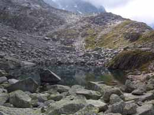

les Glaciers, table d’orientation (2459 m)

Départ : parking du tunnel du Mont Blanc (1274 m)
Aller : 3 km, +1185 m, 204 min
Retour : 7 km, + 46 et - 1231 m, 155 min
Difficulté : E en AR, EE en circuit
Période : mi juillet - septembre
Remarque : parcours haute montagne si on revient par le glacier des Pèlerins.
Bibliographie : Sentiers du Mt Blanc (itinéraires 158, 749, 153 C).
Du parking, traverser E le pont et remonter le raide sentier balisé de la Para. Plus haut, vue impressionnante depuis l’Aiguillette de la Tour (2274 m). 50 m au dessus de la station en ruine des Glaciers, superbe table d’orientation érigée en 1930 (représentation « anamorphique »).
Retour possible via le glacier des Pèlerins. On traverse horizontalement (balises bleu) de l’ancienne gare des Glaciers vers la nouvelle gare du Plan de l’Aiguille (sente, glacier facile mais moraines raides). Revenir par le refuge du Plan de l’Aiguille et la puissante cascade du Dard.
Photo : le lac Bleu.